Hai tấm thép cùng ghi “S355J2” có giống nhau không? Trên giấy thì có. Nhưng nếu một tấm được đúc liên tục và cán nhiệt-cơ, còn tấm kia cán nóng rồi để nguội tự nhiên, chúng sẽ ứng xử rất khác khi hàn, khi cắt và khi chịu tải theo chiều dày. Ký hiệu chỉ là cái tên; quá trình chế tạo mới là thứ tạo ra tính chất, và cũng tạo ra những rủi ro mà QC phải đi tìm.
Từ quặng sắt đến tấm thép: năm công đoạn
Lò cao biến quặng sắt và than cốc thành gang lỏng chứa khoảng 4% carbon. Có hai tuyến luyện chính: lò thổi oxy (BOF) khử carbon từ gang lỏng của lò cao (tuyến BF–BOF); lò hồ quang điện (EAF) nấu chảy thép phế, sắt hoàn nguyên trực tiếp DRI/HBI, có thể phối thêm gang. Phốt pho chủ yếu được khử trong lò luyện; lưu huỳnh chủ yếu được khử khi xử lý gang lỏng và tinh luyện ngoài lò. Sau đó thép được khử oxy, đúc liên tục thành phôi tấm, rồi mới đến công đoạn cán. Điều đáng nhớ là mọi con số trên chứng chỉ đều là hệ quả của bốn quyết định công nghệ: cách luyện, cách khử oxy, cách đúc và cách cán.
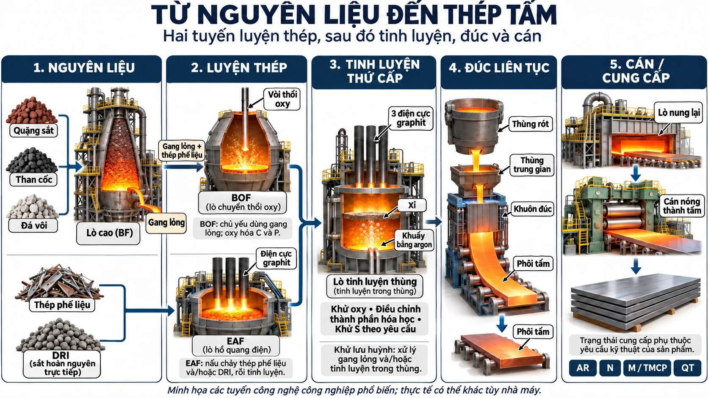
Khử oxy: sôi, lặng và lặng đặc biệt
Thép lỏng hoà tan rất nhiều oxy. Nếu không khử, khi đông đặc oxy phản ứng với carbon sinh khí CO, thép “sôi” lên và để lại rỗ khí bên trong. Khử oxy bằng silic, mangan và nhôm là bước quyết định độ sạch và độ đồng nhất của thép: không khử thì được thép sôi, khử một phần thì bán lặng, khử đầy đủ thì lặng, và khử đầy đủ kèm nguyên tố cố định nitơ (Al, Ti hoặc Nb) thì gọi là lặng đặc biệt.
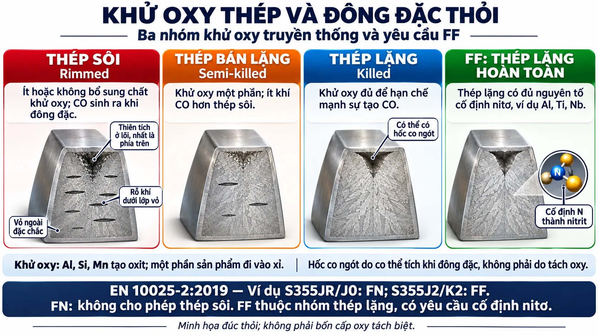
Mỗi hệ tiêu chuẩn đánh dấu điều này theo một cách. EN dùng FU (cho phép thép sôi), FN (không cho phép thép sôi) và FF (thép lặng có đủ nguyên tố cố định nitơ như Al, Ti hoặc Nb). Theo EN 10025-2:2019, ví dụ S355JR và S355J0 là FN, còn S355J2 và S355K2 là FF. GB/T 700-2006 dùng F (sôi), Z (lặng) và TZ (lặng đặc biệt) – ký hiệu b (bán lặng) của bản cũ đã bị bỏ – và cho phép lược bỏ Z và TZ, còn F bắt buộc phải ghi; vì vậy Q235B không có hậu tố F là thép lặng. Toàn bộ SM và SMA của JIS là thép lặng, còn ASTM ghi “killed steel” hoặc “fine grain practice” ngay trong từng tiêu chuẩn.
Hai chữ cái dễ nhầm: FF trong EN và TZ trong GB đều nói về khử oxy. Chúng không phải hướng Z, cũng không phải lớp phủ.
Đúc liên tục: nơi thiên tích bắt đầu
Thép lỏng được rót qua khuôn đồng làm nguội, đông đặc dần từ ngoài vào trong thành phôi tấm. Phần thép đông đặc sau cùng nằm đúng giữa chiều dày, và đó là nơi carbon, phốt pho, lưu huỳnh, mangan cùng tạp chất bị dồn lại. Hiện tượng này gọi là thiên tích đường tâm.
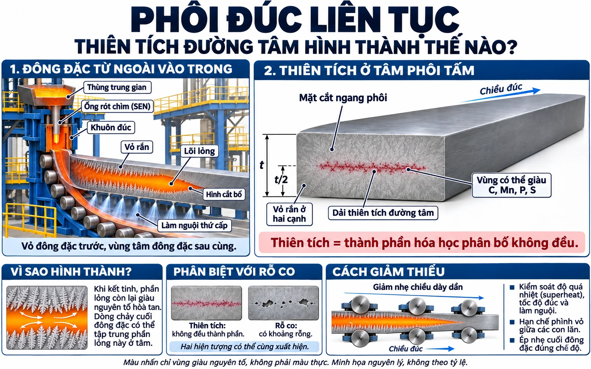
Sau khi cán, vùng này có thể trở thành một dải giữa chiều dày có thành phần, tổ chức và độ cứng khác nền, độ dai cục bộ thấp hơn. Nứt xé lớp chủ yếu do độ dẻo hướng Z thấp, tạp chất phi kim bị cán dẹt và ứng suất kéo theo chiều dày do co ngót hàn; thiên tích chỉ là yếu tố góp phần. Khi thiết kế hoặc PO yêu cầu, tấm dày được kiểm soát bằng ba nội dung khác nhau: siêu âm tấm theo EN 10160 (bất liên tục bên trong), thử hướng Z theo EN 10164 (độ dẻo theo chiều dày) và chứng chỉ 3.1. Đạt cấp UT S2/E2 không đồng nghĩa đạt Z25 hay Z35, và ngược lại. Đúc thỏi kiểu cũ thì thiên tích còn lớn và không đều hơn nhiều.
Cần phân biệt thiên tích với rỗ co. Thiên tích là thành phần hoá học phân bố không đều; rỗ co là các lỗ rỗng thật sinh ra do thể tích co lại khi đông đặc. Để giảm thiên tích, nhà máy kiểm soát độ quá nhiệt và tốc độ làm nguội, hạn chế phồng vỏ giữa các con lăn đỡ và ép nhẹ (giảm dần chiều dày) ở cuối giai đoạn đông đặc; các biện pháp này làm giảm chứ không loại bỏ hoàn toàn.
Cán nóng và tính dị hướng
Khi cán, các hạt và tạp chất bị kéo dài theo hướng cán, giống như thớ gỗ. Kết quả là một tấm thép cán không giống nhau theo mọi hướng: mạnh và dai nhất theo hướng cán (L), yếu hơn một chút theo hướng ngang (T), và yếu nhất theo chiều dày (Z). Càng cán nhiều, thớ càng rõ, khoảng cách giữa L và Z càng lớn.
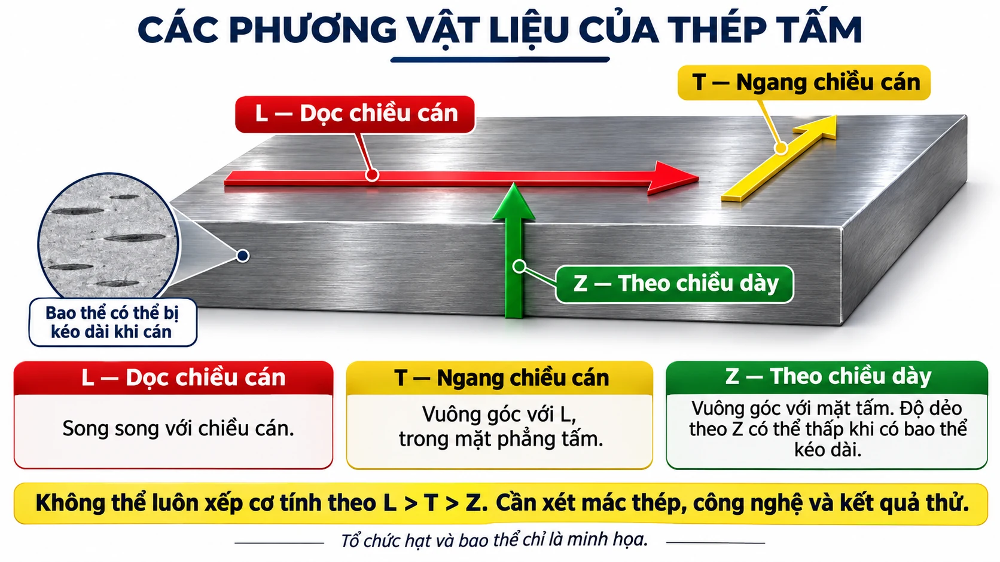
Hệ quả thực tế rất đơn giản: chứng chỉ chỉ nói về hướng đã được thử. Con số ghi trên giấy không nói gì về hai hướng còn lại.
Thứ tự L > T > Z chỉ là xu hướng chung, không phải quy luật cho mọi mác thép: vì vậy phải xét mác thép, công nghệ chế tạo và kết quả thử thực tế thay vì suy ra từ hướng.
Năm cách “cán” hay bị nhầm lẫn
Cán nóng (+AR) cán trên khoảng 900 °C rồi để nguội tự nhiên. Thường hóa (+N) nung lại trên Ac3 hoặc kết thúc cán trong dải nhiệt tương đương. Cán nhiệt-cơ (+M, TMCP) kiểm soát nhiệt độ và biến dạng ở từng giá cán, nhờ đó đạt cường độ với hàm lượng carbon và hợp kim thấp hơn nên CEV thấp (bản thân việc cán không làm giảm CEV của mẻ thép). Thép +M không được tạo hình nóng, và khử ứng suất trên 580 °C hoặc quá 1 giờ có thể làm giảm cơ tính (EN 10025-4). Cán nguội dùng cho băng, tấm mỏng và sản phẩm cần độ chính xác, bề mặt tốt (kể cả tôn mạ, thép không gỉ), không dùng cho tấm kết cấu dày. Tạo hình nguội (như S355J2H theo EN 10219) làm hoá bền vùng uốn, nên cần hạn chế hàn ngay tại góc uốn.
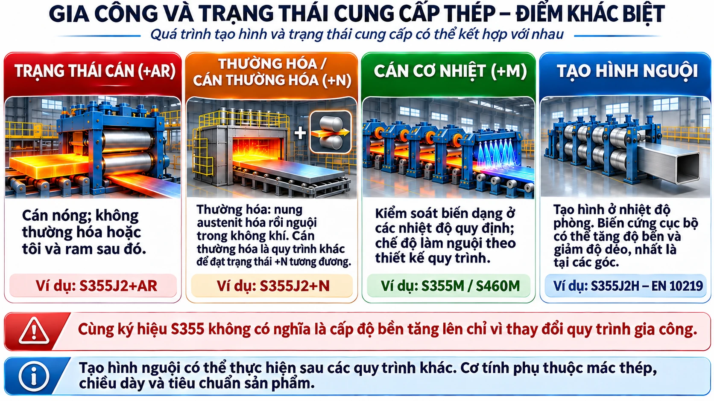
Thép hình cán nóng và thép tổ hợp hàn
Trên bản vẽ, một dầm I cán nóng và một dầm I tổ hợp hàn từ ba tấm có thể trông giống hệt nhau, nhưng hồ sơ QC của chúng khác hẳn. Thép hình cán nóng chỉ cần một chứng chỉ vật liệu và kích thước theo EN 10034. Dầm tổ hợp cần truy xuất vật liệu của cả ba tấm bụng và cánh (có thể cùng một chứng chỉ hoặc nhiều chứng chỉ), WPS, chứng chỉ thợ hàn và hồ sơ NDT, cộng thêm việc kiểm soát ứng suất dư, cong vênh, độ thẳng và độ vuông.
Bốn cách làm ống thép kết cấu
Ống liền được xuyên phôi và cán kéo nên không có đường hàn, nhưng chiều dày thành có thể lệch tâm. ERW hoặc HFW hàn điện trở hoặc cao tần từ cuộn thép, thường không dùng kim loại đắp và bavia ngoài thường được cạo phẳng. LSAW uốn tấm thành ống rồi hàn hồ quang chìm dọc thân; UOE, JCOE là các cách tạo hình. SSAW (hay HSAW) quấn cuộn theo đường xoắn ốc, nên đường hàn rất dài và khuyết tật có thể nằm bất kỳ chỗ nào trên đó.
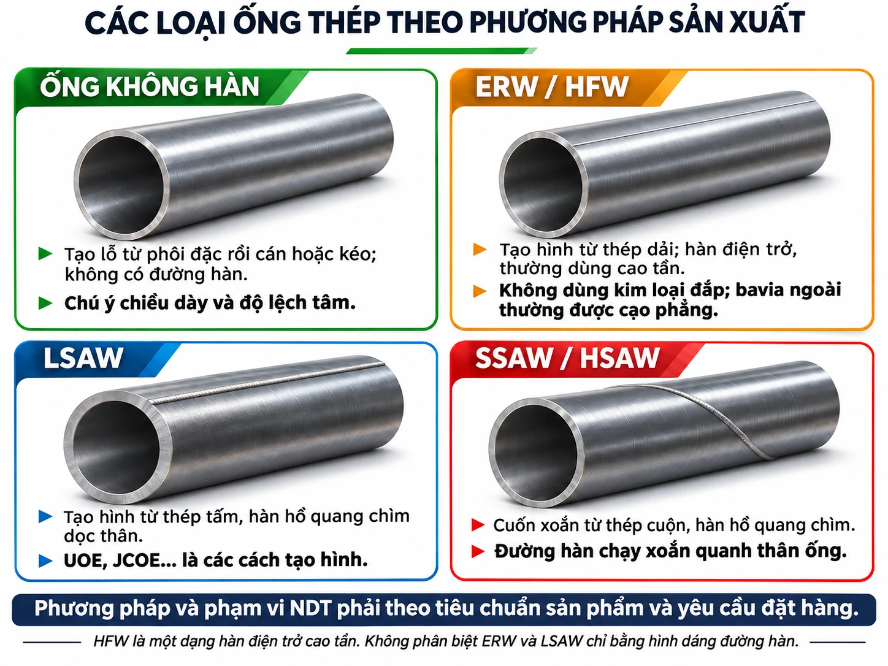
Khi thiết kế, tiêu chuẩn hoặc yêu cầu dự án có quy định, đường hàn dọc của ống phải được bố trí tránh vùng ứng suất lớn và không trùng với mối hàn liên kết; xưởng hay bỏ sót yêu cầu này khi nó có trên bản vẽ.
Phương pháp và phạm vi NDT đường hàn phụ thuộc tiêu chuẩn sản phẩm và yêu cầu đặt hàng. Cũng đừng phân biệt ERW với LSAW chỉ bằng hình dáng đường hàn: hình dáng bên ngoài không cho biết chắc phương pháp chế tạo.
Thép cán, thép đúc và thép rèn
Ngoài thép cán còn hai nhóm khác mà QC kết cấu thường gặp. Thép đúc (EN 10293, EN 10340, ASTM A216 và A148) dùng cho nút cầu, gối cầu và chi tiết hình dáng phức tạp; rủi ro là rỗ co, rỗ khí và nứt nóng nên cần RT hoặc UT kèm MT hoặc PT. Thép rèn (EN 10250, ASTM A668) dùng cho chốt, trục và chi tiết chịu tải tập trung; rủi ro là gấp nếp và nứt theo thớ nên cần UT, MT và kiểm hướng thớ so với hướng chịu lực.
Bảng tra nhanh: mỗi quá trình chế tạo, QC phải kiểm gì
| Sản phẩm | Rủi ro đặc trưng | Hạng mục kiểm tra |
|---|---|---|
| Tấm dày 30–150 mm | Phân lớp, thiên tích đường tâm | Siêu âm tấm EN 10160 và thử hướng Z khi thiết kế/PO yêu cầu · CTC 3.1 |
| Thép hình cán nóng | Lẫn mác, sai kích thước, nứt bề mặt | Marking + số mẻ nấu · EN 10034 · VT bề mặt |
| Thép tổ hợp hàn | Ứng suất dư, cong vênh, lỗi hàn bụng–cánh | Truy xuất CTC cả 3 tấm · WPS/PQR · thợ hàn · NDT · độ thẳng, độ vuông |
| Ống liền | Lệch tâm chiều dày thành | Đo nhiều vị trí trên chu vi · CTC |
| Ống ERW / HFW | Thiếu ngấu đường hàn | NDT đường hàn theo tiêu chuẩn sản phẩm · thử ép bẹt |
| Ống LSAW / SSAW | Khuyết tật trên đường hàn dài | RT hoặc UT đường hàn · vị trí đường hàn khi lắp |
| Chi tiết đúc | Rỗ co, rỗ khí, nứt nóng | RT/UT · MT hoặc PT · hồ sơ nhiệt luyện |
| Chi tiết rèn | Gấp nếp, nứt theo thớ | UT · MT · hướng thớ so với hướng chịu lực |
Biết vật liệu được làm ra thế nào giúp bạn đoán trước nó sẽ hỏng ở đâu. Bài tiếp theo đi sâu hơn một bước, vào bên trong thép: cấu trúc tinh thể, giản đồ pha, và vì sao khi hàn thép lại có thể đổi tính chất ngay cạnh mối hàn.
Are two plates both marked “S355J2” the same? On paper, yes. But if one was continuously cast and thermo-mechanically rolled, and the other hot rolled and left to cool in air, they will behave very differently when welded, when cut and when loaded through the thickness. The designation is only a name; the manufacturing route is what creates the properties, and also the risks QC must go looking for.
From iron ore to plate: five stages
The blast furnace turns iron ore and coke into hot metal with about 4% carbon. There are two main routes: the basic oxygen furnace (BOF) decarburises hot metal from the blast furnace (BF–BOF route); the electric arc furnace (EAF) melts scrap and direct reduced iron DRI/HBI, sometimes with some pig iron. Phosphorus is mainly removed in the steelmaking furnace; sulphur mainly during hot-metal treatment and secondary (ladle) refining. The steel is then deoxidised, continuously cast into slabs, and only then rolled. What is worth remembering is that every number on the certificate results from four process decisions: how it was melted, deoxidised, cast and rolled.
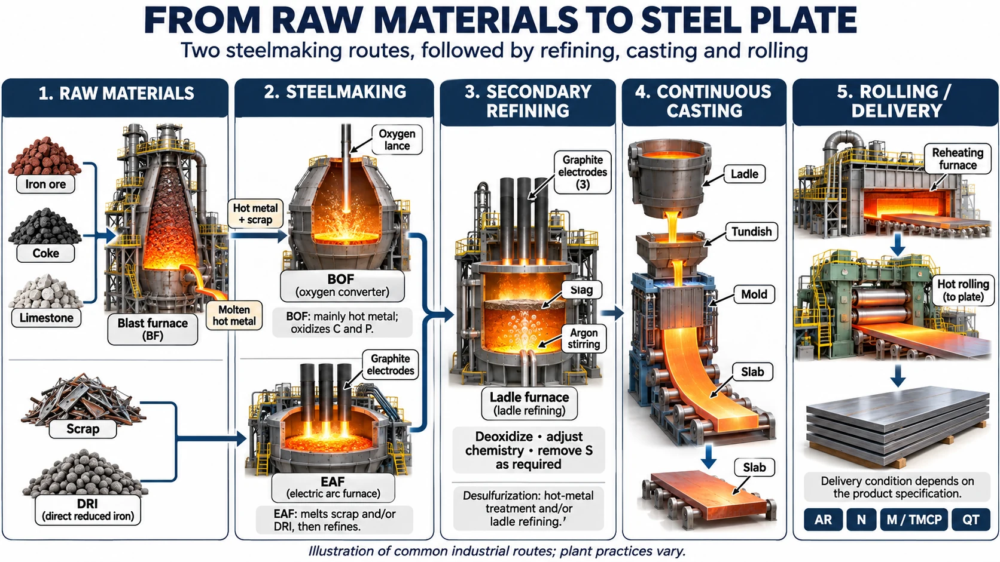
Deoxidation: rimmed, killed and fully killed
Liquid steel dissolves a lot of oxygen. If it is not removed, oxygen reacts with carbon on solidification to form CO gas; the steel “boils” and leaves gas pores inside. Deoxidising with silicon, manganese and aluminium decides the cleanliness and uniformity of the steel: with none you get rimmed steel, partial gives semi-killed, full gives killed, and full deoxidation plus nitrogen-binding elements (Al, Ti or Nb) is called fully killed.
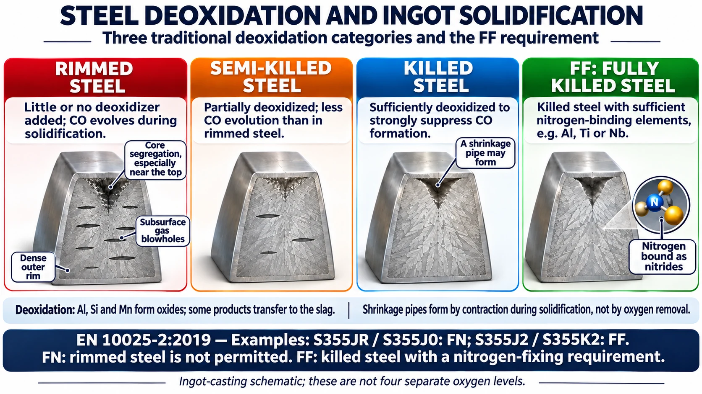
Each system flags this in its own way. EN uses FU (rimming steel allowed), FN (rimmed steel not permitted) and FF (killed steel with sufficient nitrogen-binding elements such as Al, Ti or Nb). Under EN 10025-2:2019, for example, S355JR and S355J0 are FN, while S355J2 and S355K2 are FF. GB/T 700-2006 uses F (rimmed), Z (killed) and TZ (fully killed) – the old b (semi-killed) symbol has been dropped – and lets Z and TZ be omitted while F must always be shown; so Q235B without an F suffix is killed steel. All SM and SMA of JIS are killed steel, while ASTM writes “killed steel” or “fine grain practice” within each standard.
Two letters easy to confuse: FF in EN and TZ in GB both describe deoxidation. They are neither the Z direction nor a coating.
Continuous casting: where segregation begins
Liquid steel is poured through a cooled copper mould and solidifies from the outside in as a slab. The steel that solidifies last sits right at mid-thickness, and that is where carbon, phosphorus, sulphur, manganese and inclusions are pushed together. This is called centre-line segregation.
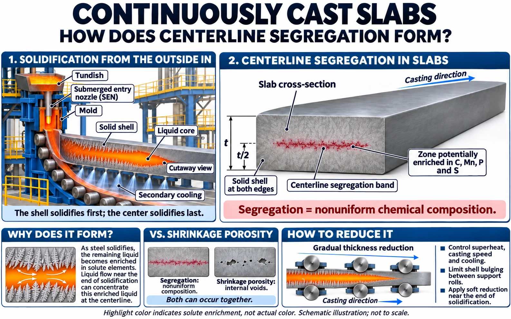
After rolling this zone may become a mid-thickness band whose composition, microstructure and hardness differ from the matrix, with lower local toughness. Lamellar tearing is caused mainly by low through-thickness ductility, flattened non-metallic inclusions and through-thickness tensile stress from weld shrinkage; segregation is only a contributing factor. When the design or PO requires it, thick plate is controlled by three different checks: plate UT to EN 10160 (internal discontinuities), Z testing to EN 10164 (through-thickness ductility) and a 3.1 certificate. Meeting UT class S2/E2 does not mean meeting Z25 or Z35, and vice versa. Old-style ingot casting gave much larger and less uniform segregation.
Segregation must be distinguished from shrinkage porosity. Segregation is non-uniform chemical composition; shrinkage porosity is real voids caused by volume contraction on solidification. To reduce segregation the mill controls superheat and cooling rate, limits bulging between support rolls and applies soft reduction (gradual thickness reduction) near the end of solidification; these measures reduce but do not completely eliminate it.
Hot rolling and anisotropy
During rolling, grains and inclusions are stretched along the rolling direction, like the grain of wood. As a result a rolled steel plate is not the same in all directions: strongest and toughest along rolling (L), slightly weaker across (T), and weakest through the thickness (Z). The more rolling, the clearer the grain and the bigger the gap between L and Z.
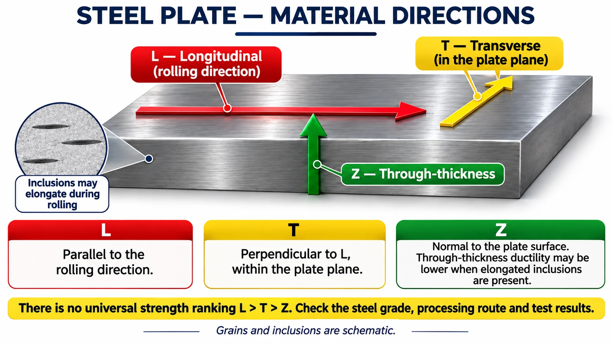
The practical consequence is simple: a certificate speaks only for the direction tested. The number on the paper says nothing about the other two directions.
The order L > T > Z is only a general tendency, not a rule for every steel: so consider the grade, the manufacturing route and the actual test results rather than inferring from direction.
Five “rolling” routes that are easily confused
Hot rolling (+AR) is rolled above about 900 °C then left to cool in air. Normalising (+N) reheats above Ac3 or finishes rolling in an equivalent temperature range. Thermo-mechanical rolling (+M, TMCP) controls temperature and strain at each pass, so the strength is reached with lower carbon and alloy content and CEV is low (rolling itself does not lower the CEV of the heat). +M steel must not be hot formed, and stress relieving above 580 °C or for over 1 h may degrade its properties (EN 10025-4). Cold rolling is used for strip, thin sheet and products needing precision and a good surface (including coated sheet and stainless steel), not for thick structural plate. Cold forming (such as S355J2H to EN 10219) work-hardens the bend zone, so avoid welding right at the corner.
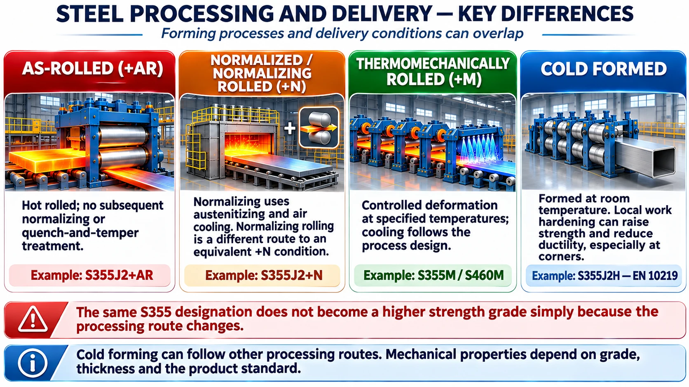
Hot-rolled sections and welded built-up sections
On the drawing, a hot-rolled I-beam and an I-beam built up by welding from three plates can look identical, but their QC records are completely different. A hot-rolled section needs one material certificate and dimensions to EN 10034. A built-up beam needs traceable material for all three web and flange plates (one or several certificates), a WPS, welder certificates and NDT records, plus control of residual stress, distortion, straightness and squareness.
Four ways of making structural steel tubes
Seamless tube is pierced and drawn so it has no weld seam, but the wall thickness can be eccentric. ERW or HFW is welded by resistance or high-frequency current from coil, usually without filler metal, and the external flash is usually scarfed flat. LSAW forms plate into a tube and welds it by submerged arc along the body; UOE and JCOE are forming routes. SSAW (or HSAW) winds coil in a spiral, so the weld is very long and defects can sit anywhere along it.
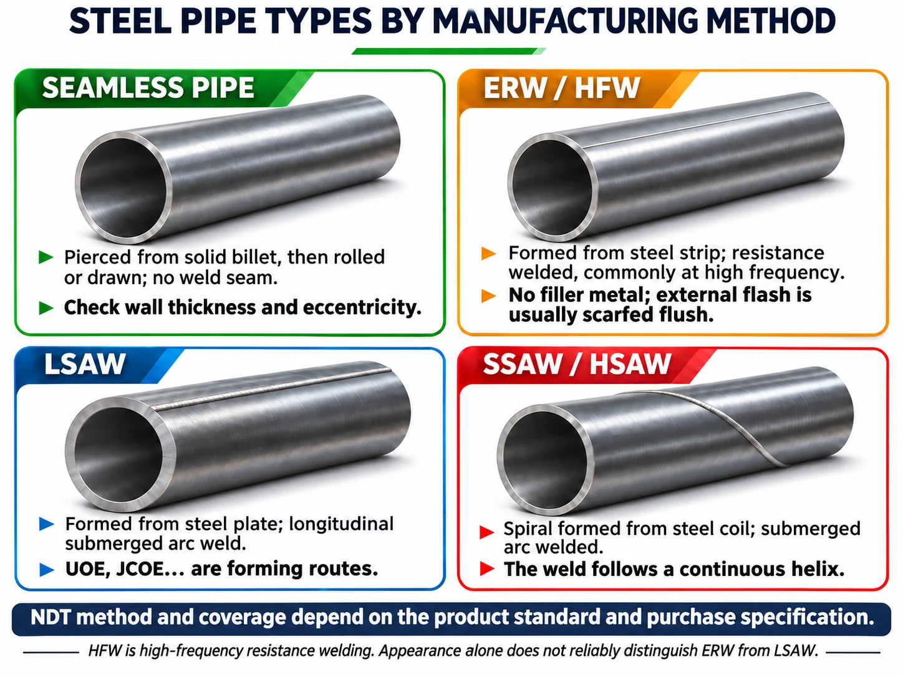
Where the design, standard or project specification requires it, the longitudinal seam of the tube must be positioned away from high-stress zones and must not coincide with joint welds; shops often miss this requirement when it is on the drawing.
The method and extent of seam NDT depend on the product standard and the purchase specification. Also do not tell ERW from LSAW by the look of the weld alone: appearance does not reliably show the manufacturing method.
Rolled, cast and forged steel
Besides rolled steel there are two more groups that structural QC often meets. Cast steel (EN 10293, EN 10340, ASTM A216 and A148) is used for bridge nodes, bearings and complex shapes; the risks are shrinkage, gas porosity and hot cracks so RT or UT plus MT or PT is needed. Forged steel (EN 10250, ASTM A668) is used for pins, shafts and concentrated-load parts; the risks are laps and cracks along the grain so UT, MT and a check of grain direction against load direction are needed.
Quick reference: for each process, what QC must check
| Product | Typical risk | Checks |
|---|---|---|
| Plate 30–150 mm | Lamination, centre-line segregation | Plate UT EN 10160 and Z test when the design/PO requires · 3.1 certificate |
| Hot-rolled sections | Mixed grades, wrong size, surface cracks | Marking + heat number · EN 10034 · surface VT |
| Welded built-up | Residual stress, distortion, web–flange weld defects | Traceable CTCs for all 3 plates · WPS/PQR · welders · NDT · straightness, squareness |
| Seamless tube | Wall eccentricity | Measure at several positions · CTC |
| ERW / HFW tube | Lack of fusion in seam | Seam NDT per product standard · flattening test |
| LSAW / SSAW tube | Defects along a long weld | RT or UT of seam · seam position at fit-up |
| Castings | Shrinkage, gas porosity, hot cracks | RT/UT · MT or PT · heat-treatment record |
| Forgings | Laps, cracks along grain | UT · MT · grain versus load direction |
Knowing how the material was made helps you predict where it will fail. The next article goes one step deeper, inside the steel: crystal structure, the phase diagram, and why steel can change its properties right beside a weld.